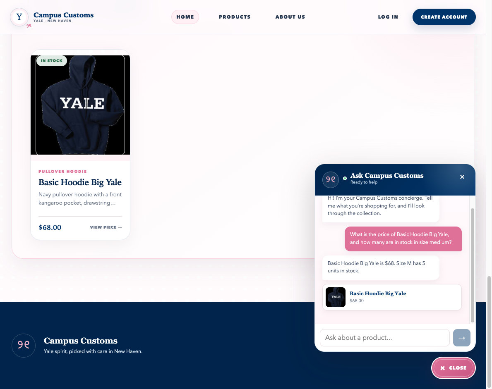
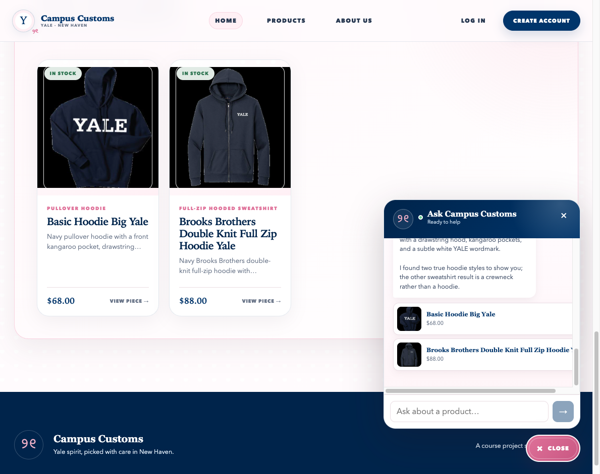
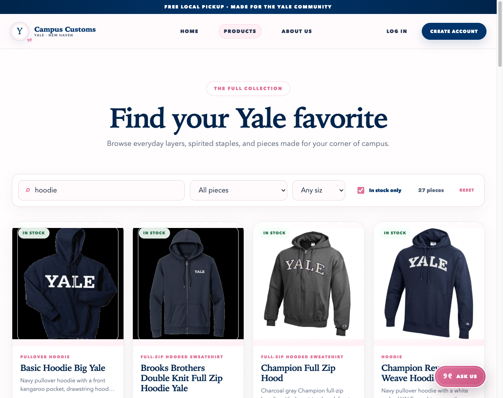

Check 01 · Database-grounded chat
Real price and size-level inventory
The chat reports the Basic Hoodie Big Yale at $68 and confirms 5 units in size M. The matching product card is populated from the catalogue database.

Evidence captured from the live React storefront and FastAPI chatbot on October 5, 2026.
The chat reports the Basic Hoodie Big Yale at $68 and confirms 5 units in size M. The matching product card is populated from the catalogue database.

The chat category request produces two database-backed hoodie cards with images, names, and prices. Clicking the Brooks Brothers result was also verified to open its correct product-detail route.

Searching for “hoodie” and enabling “In stock only” immediately narrows the catalogue to 27 pieces. The visible count and filtered cards give shoppers clear feedback without leaving the page.
